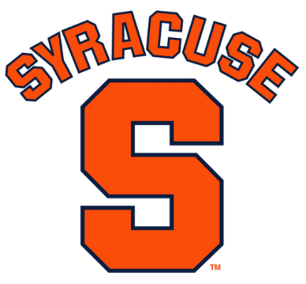
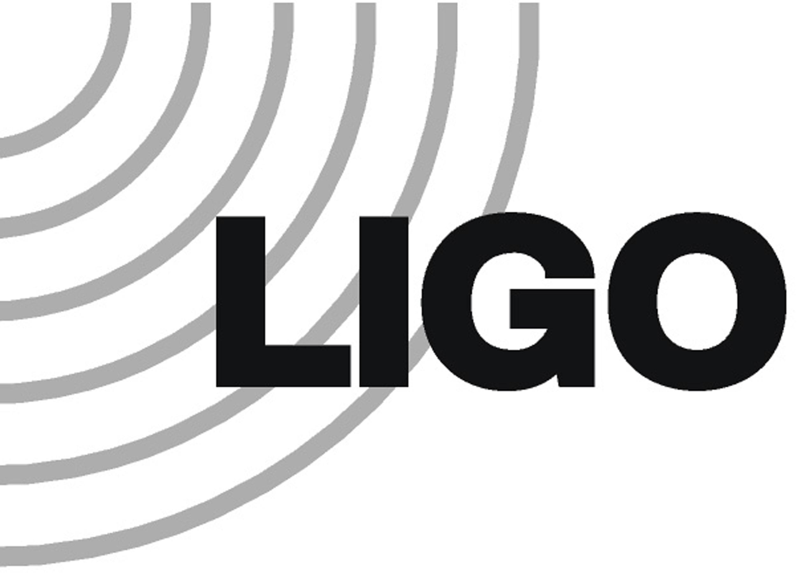
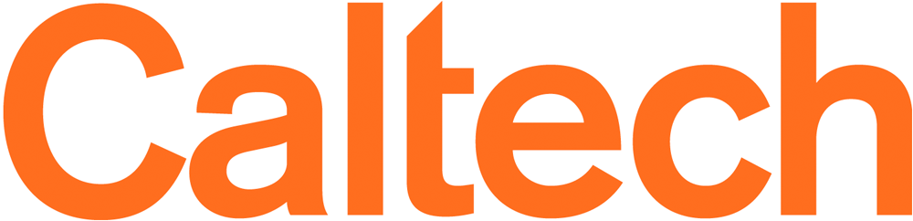
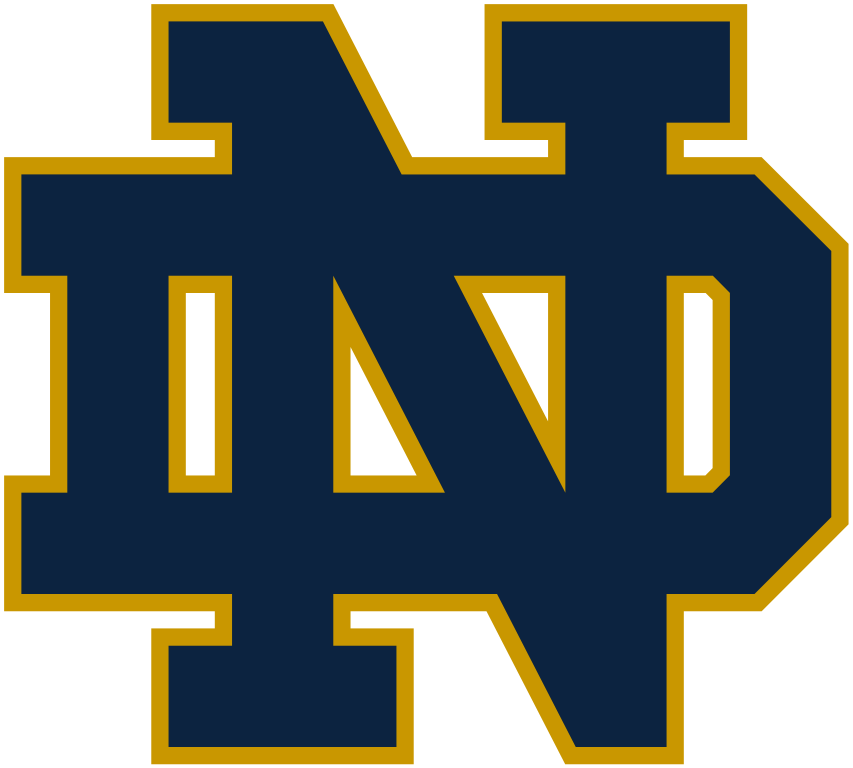

Assistant Professor at Syracuse 
Postdoc for
PhD in Experimental Gravity from 
craigcahillane@fastmail.com
Curriculum Vitae on gitlab
I am currently an Assistant Professor at Syracuse University.
My research focuses on developing technology for gravitational wave detectors, with a focus on ultra-high power laser systems.
I am also currently exploring photoneutralization cavities for neutral beam injection in tokamak fusion reactors.
I was a postdoc at LIGO Hanford Observatory, starting in February 2021.
I graduated from Caltech with a PhD in experimental astrophysics, with a focus on calibration
uncertainty and interferometer controls.
As a grad student I worked as a commissioner at LIGO intermittently for a total of two years.
I focused on modeling laser frequency and intensity control systems' noise masking the
gravitational-wave signal,
measured and simulated interferometer transfer functions to infer the resonant arm power,
measured and simulated the differential arm (DARM) degree of freedom for comparison between the
expected response to gravitational-waves and reality,
and created the advanced-detector era interferometric calibration uncertainty budget pipeline.
Python, C/C++, MATLAB, Unix, Javascript, Git, LaTeX
Interferometer simulation Finesse
Linear Simulation and Optimization of analog electronic circuits LISO
nds2utils: convenient user interface for the python
nds2 LIGO data-acquisition client.
(gitlab)
beamtrace: python3 based gaussian laser beam ABCD
matrix propagator.
(gitlab)
Markov Chain Monte Carlo (MCMC): emcee
Gaussian Process Regression (GPR): scikit-learn
Worked in the Caltech optical coatings thermal noise lab for testing aluminum gallium arsinide (AlGaAs)
optics coatings.
Locked two lasers' frequencies to two Fabry-Perot cavity lengths with the goal of measuring cavity
mirror coatings Brownian noise.
Mode matching, polarization, mode cleaning, laser intensity control, laser frequency control, cavity
temperature control
Spectrum Analyzers: SR785, Agilent A4395A, HP8560E
Oscilloscopes: Tektronics 3032 and 3034
RF Generator: Marconi 2023A
Preamplifiers: SR560
GPIB: Developed python scripts to acquire data, monitor, and control lab electronics in real time.
Soldering, Circuit design and noise analysis, Control systems, Optics
Passed Caltech Machine Shop Course ME113
Trained on the Lathe, Mill, Bandsaw, Drillpress, Laser Printer, 3D Printer, and Waterjet.
2015-2017 LIGO Caltech Outreach Lead.
Black Hole Merger Demonstration
Organized ~15 trips to local elementary and high schools, and even more talks to schools out of state,
including Notre Dame.
Black Hole Merger Demonstration. Simulates gravitational wave emission
from black hole binaries near the end of their lives.
Interactive Fabry-Perot optical cavity. Visualizes how lasers and mirrors
interact in a simple two-mirror resonator.
Interactive LHO correlated noise plot. Demo of my interactive
LIGO Hanford correlated noise plot.
 University of Notre Dame. Graduated 2014. Degrees in Physics and Computer Science. 3.795 GPA
Lasers, Optics, Control Systems, Cosmoslogy, Astrophysics, Arduino, Raspberry Pi, Golf, Tennis, Frisbee, Notre Dame Football, 538 The Riddler
First Author:
Calibration Uncertainty for Advanced LIGO's First
and Second Observing Runs
(arXiv)
Contributing Author:
Calibration of the Advanced
LIGO detectors for the discovery of the binary black-hole merger GW150914
(arXiv)
Systematic calibration error
requirements for gravitational-wave detectors via the Cramér-Rao bound
(arXiv)
In Prep (as first author or member of paper-writing team):
Sensitivity and Performance of
the Advanced LIGO Detectors in the Third Observing Run
Frequency Noise for Third-Generation
Gravitational Wave Detectors
Full Collaboration Papers:
GW170817: Observation of
Gravitational Waves from a Binary Neutron Star Inspiral First direct detection of gravitational
waves from a neutron star binary.
Observation of
Gravitational Waves from a Binary Black Hole Merger First detection of gravitational waves.
Created by Craig Cahillane
Last Updated:
{kind=link}
{kind=link}
{kind=link}
{kind=link}
{kind=link}
{kind=link}
{kind=link}
{kind=link}
{kind=link}
{kind=link}
{kind=link}
{kind=link}
{kind=link}
{kind=link}
{kind=link}